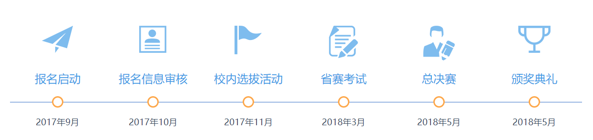

第九届蓝桥杯全国软件和信息技术专业人才大赛—国赛
个人赛—软件类
个人赛—电子类
个人赛—用户体验设计赛
团队赛
参赛需知
参赛对象
（1）JAVA软件开发
对象：具有正式全日制学籍并且符合相关科目报名要求的研究生、本科及高职高专学生（以报名时状态为准），以个人为单位进行比赛。该专业方向设大学A组、大学B
组、大学C组。
说明：985、211本科生只能报大学A组，所有院校研究生只能报大学A组，其它院校本科生可自行选择报大学A组或大学B组，高职高专院校可报大学C组或自行选择报任意
组别。（2）C/C++程序设计
对象：具有正式全日制学籍并且符合相关科目报名要求的研究生、本科生及高职高专学生（以报名时状态为准) ，以个人为单位进行比赛。该专业方向设大学A组、大学B
组、大学C组。
说明：985、211本科生只能报大学A组，所有院校研究生只能报大学A组，其它院校本科生可自行选择报大学A组或大学B组，高职高专院校可报大学C组或自行选择报任意
组别。
（3）嵌入式设计与开发
对象：具有正式学籍的在校全日制研究生、本科及高职高专学生(以报名时状态为准)，以个人为单位进行比赛。该专业方向设大学组。
（4）单片机设计与开发
对象：具有正式学籍的在校全日制本科及高职高专学生(以报名时状态为准)，以个人为单位进行比赛。该专业方向设大学组。
报名时间
报名时间：2017年10月-2017年12月15日
报名须知
人数及方式：
以学校为单位报名。
各参赛学校需为每位参赛选手配备一名指导教师，每名选手的指导教师最多一名，报多名的以排序第一的为准，其余无效。同一名指导教师可指导多位选手。
报名方式：学校及选手登陆大赛官方网站在线报名。
报名材料：
报名表、身份证复印件、学生证复印件、2寸相片，以上均需要电子扫描版，通过报名系统上传。
报名及参赛费用：
C/C++程序设计、Java软件开发、嵌入式设计与开发、单片机设计与开发每个科目报名费为300元/人。
选手及指导老师（或家长）在省赛、决赛期间发生的住宿、用餐、交通等费用自理；
报名费由蓝桥杯大赛组委会收取。
组织工作：
大赛的报名、交费、下载准考证等工作全部通过蓝桥杯官网在线报名系统完成。
赛事流程
奖项设置及评选办法
省赛
参赛选手奖
省赛每个组别设置一、二、三等奖，比例分别为10%、20%、30%，总比例为实际参赛人数的60%，零分卷不得奖。省赛一等奖选手获得直接进入全国总决赛资格。 所有
获奖选手均可获得由工业和信息化部人才交流中心及大赛组委会联合颁发的获奖证书。
指导教师奖
省赛中获奖的参赛选手的指导教师将获得“蓝桥杯全国软件和信息技术专业人才大赛（XX赛区）优秀指导教师”称号。
参赛学校奖
参赛组织工作表现突出、经审批符合相关条件的单位，将获得“蓝桥杯全国软件和信息技术专业人才大赛（XX 赛区）优秀组织单位”称号； 参赛选手成绩优异，经审批
符合相关条件的学校将获得“蓝桥杯全国软件和信息技术专业人才大赛（XX赛区） 优胜学校”称号。
总决赛
全国总决赛按参赛项目和成绩，为获奖学生、教师和组织单位颁发相应证书和奖励。其中：
参赛选手奖
个人赛根据相应组别分别设立特、一、二、三等奖及优秀奖。在决赛奖项设置中，每个组别设置特等奖1名，一等奖不高于5%，二等奖占20%，三等奖不低于25%，优秀奖
不超过50%， 零分卷不得奖。
所有获奖选手均可获得由工业和信息化部人才交流中心及大赛组委会联合颁发的获奖证书。
总决赛三等奖及以上选手，如果获得本校免试推研资格，将获得北京大学软件与微电子学院等院校的面试资格，并优先录取为该院普通硕士研究生。
IBM、百度等数十家知名企业为优秀的参赛选手及获奖选手提供实习、工作绿色通道，优先安排面试、实习、就业。
指导教师奖
所有获奖选手的指导教师，均可获得“蓝桥杯全国软件和信息技术专业人才大赛优秀指导教师”证书。
参赛学校奖
参赛组织工作成绩突出、经审批符合相关条件的单位，获“蓝桥杯全国软件和信息技术专业人才大赛优秀组织单位”称号； 参赛选手成绩优异、经审批符合相关条件的学
校获“蓝桥杯全国软件和信息技术专业人才大赛优胜学校”称号。
设计赛介绍
本届用户体验设计赛由工业和信息化部人才交流中心和百度公司联合主办，大赛组委会秘书处设在工业和信息化部人才交流中心。
比赛科目
用户体验设计赛比赛分为两个大类：1.智能手机应用设计类（包括手机壁纸设计、手机图标设计、表情包设计三个比赛科目）；2.品牌设计类（包括蓝桥LOGO设计、蓝桥
吉祥物设计、蓝桥设计之美H5设计三个比赛科目）。大赛赛制分为全国选拔赛和总决赛两个阶段，选拔赛根据各科目进行评奖。选拔赛一等奖选手进入总决赛，总决赛进
行现场答辩，评选出获奖作品。具有正式全日制学籍并且符合报名要求的所有在读研究生、本科生及高职高专学生（以报名时状态为准）均可报名参赛，不限专业。
比赛特色
总决赛三等奖及以上获奖选手，可有机会获得百度、视觉中国、洛可可、正邦创意等数十家知名企业提供的实习、工作绿色通道，优先安排面试、实习、就业。
报名时间
用户体验设计赛于2017年9月启动报名，报名及选拔赛作品提交截止日期为2018年3月30日，决赛和颁奖典礼将于2018年5月举行。
比赛奖项
选拔赛设置一等奖、二等奖、三等奖及优秀奖。选拔赛所有获奖选手及指导教师均可获得工业和信息化部人才交流中心与百度公司联合颁发的全国选拔赛获奖证书。决赛根
据参赛类别设置相应奖项，决赛所有获奖选手及指导教师均可获得工业和信息化部人才交流中心与百度公司联合颁发的全国总决赛获奖证书。
报名说明
请各高校积极动员和组织学生参加比赛，具体报名办法及相关资料详见竞赛章程。
参赛对象
由全日制普通高校在读的研究生、本科和高职高专学生（当年应届毕业生也可以参加）组成的团队。每队由 1名领队、1名顾问、2名指导老师、3名学生组成。其中，领队
和指导老师可以兼任，顾问必须来自于校外的企业在职人员。
参赛形式
每所院校参赛团队原则上不多于20支队伍
竞赛题目
本届大赛限定题目，须满足以下要求：
1) 参赛主题须为“互联网+”领域。
2) 结合实际应用和行业发展趋势，就创新业务做商业计划分析和原型搭建。
*行业标准和最佳商业创新构想
*结合实际应用的业务创新
*技术路线及实现方案
*投资回报分析
3) 基于开放架构，实现IT与业务相对齐。
提交方案要求
参赛者提交的方案应至少包含下述文档或实物：
其中初赛需提交第一和第二部分内容，入围决赛队伍需对初赛提交的第一、二部分内容进行完善，并补充提交第三部分内容。
（1）方案概要
不超过800字的概要介绍；说明目标、思路、做法和亮点；
（可选）不超过10分钟的视频或音频补充材料；
（2）解决方案
解决方案须详细标注每部分的负责人，并阐述参赛团队内各选手在其中的角色及作用。应该至少包括以下三部分内容：
(1)项目报告(2)投资回报分析(3)技术实现方案
（3）核心内容展示
以PPT，Flash等形式来介绍和展示方案的思路和核心内容；项目原型。
参赛对象
具有正式全日制学籍的历届蓝桥杯大赛（省赛）软件类一等奖获奖选手（需在校），要求本科生、高职高专学生。比赛不分组别，学生以个人为单位参赛，每所参赛院校须
派至少一名带队老师。
报名时间
拟定于省赛结束后，具体时间将另行通知。
报名须知
报名人数
以学校为单位报名，原则对每所院校报名人数无上限要求。
每所参赛院校须派至少一名带队老师，带队老师要求为各参赛院校教学院长、计算机或信息系主任、教务处长、专业带头人、实训基地负责人、骨干教师、指导教师等。
报名方式
须在报名截止日期前将学生及其带队老师的报名表发到lanqiao@lanqiao.org邮箱并完成缴费。
若逾期未报名及缴费，视为高校自动放弃参加蓝桥杯国际赛资格，后续将不予安排国际赛报名。
报名及参赛费用：
选手及带队老师在国际赛期间发生的比赛、师生交流、院校参观、用餐、交通及住宿费。报名费用由蓝桥杯大赛组委会收取。
组织工作：
国际赛报名、缴费等工作全部由蓝桥杯组委会安排线下完成。